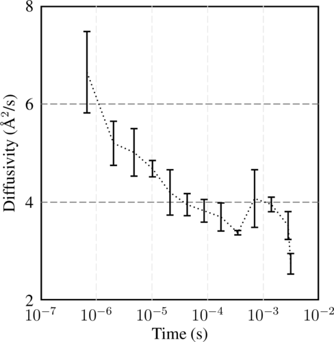

{
"rgb": {
"xgridgray": "0.9 0.9 0.9",
"ygridgray": "0.4 0.4 0.4"
},
"plots": ["plot1"],
"plot1": {
"key": {"show": false},
"xaxis": {
"ticks": {"number": "6"},
"logscale": true,
"title": {"text": "Time (s)"},
"min": "1.0e-07",
"max": "0.01"
},
"yaxis": {
"ticks": {"number": "4"},
"title": {"text": "Diffusivity ({\\AA}$^2$/s)"},
"min": "2",
"max": "8"
},
"xgrid": {
"show": true,
"line": {"style": "dashed", "color": "xgridgray", "width": "0.5"}
},
"ygrid": {
"show": true,
"line": {"style": "dashed", "color": "ygridgray", "width": "0.5"}
},
"curves": ["curve1"],
"curve1": {
"line": {"style": "dotted", "color": "black"},
"symbol": {"shape": "yerrbar", "color": "black"},
"data": {
"x": [
6.8043e-07,
2.04127e-06,
4.76294e-06,
1.02063e-05,
2.1093e-05,
4.28664e-05,
8.64131e-05,
0.000173507,
0.000347694,
0.000696068,
0.00139214,
0.00278495,
0.0031
],
"y": [
6.64722,
5.19904,
5.01465,
4.68306,
4.19872,
3.95007,
3.82418,
3.69784,
3.37833,
4.07411,
3.95392,
3.52453,
2.74532
],
"yerr": [
0.842941,
0.463582,
0.498149,
0.180781,
0.475639,
0.239229,
0.245401,
0.299837,
0.0585485,
0.601041,
0.162444,
0.297506,
0.223356
]
}
}
}
}